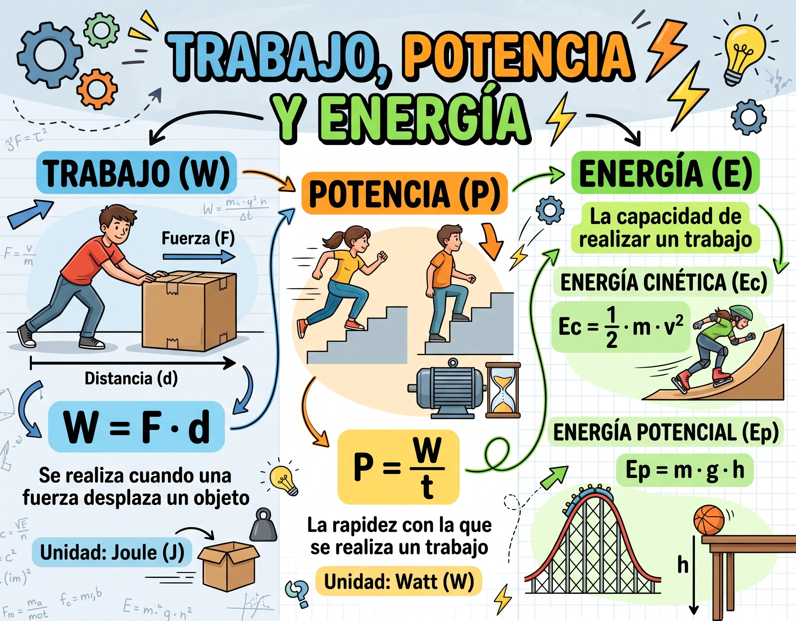
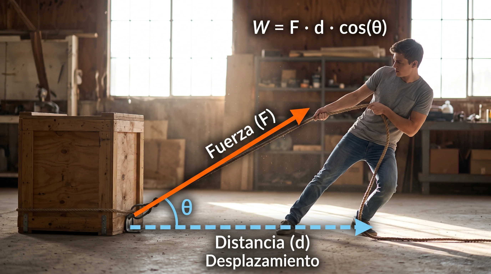
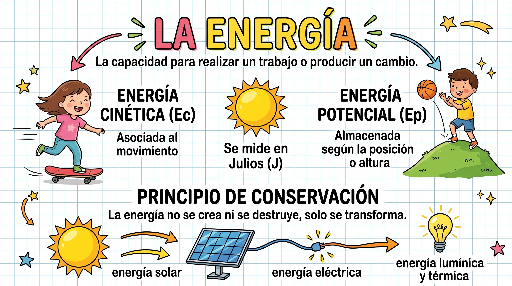
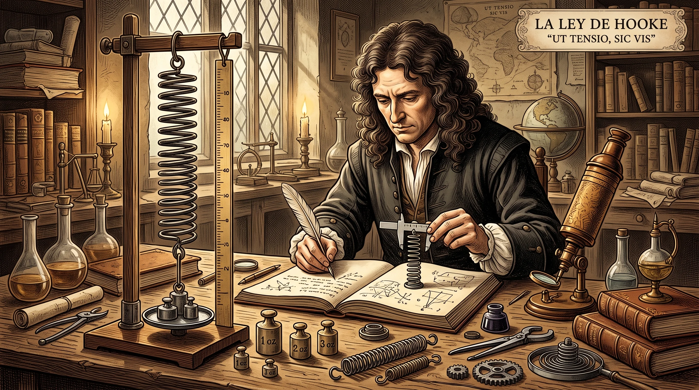
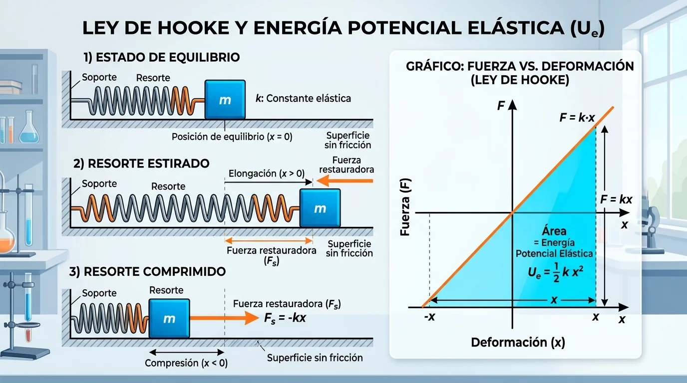
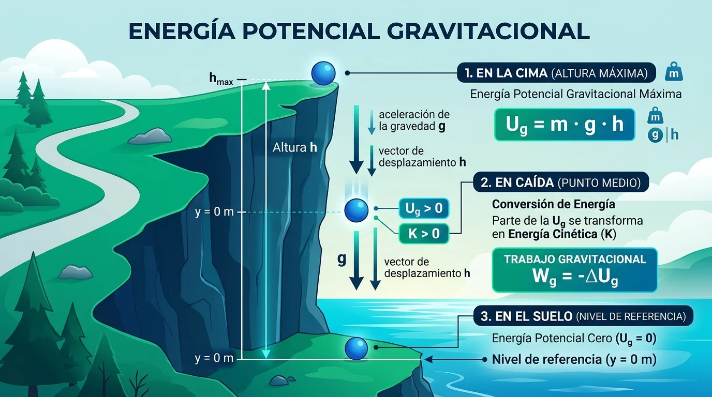
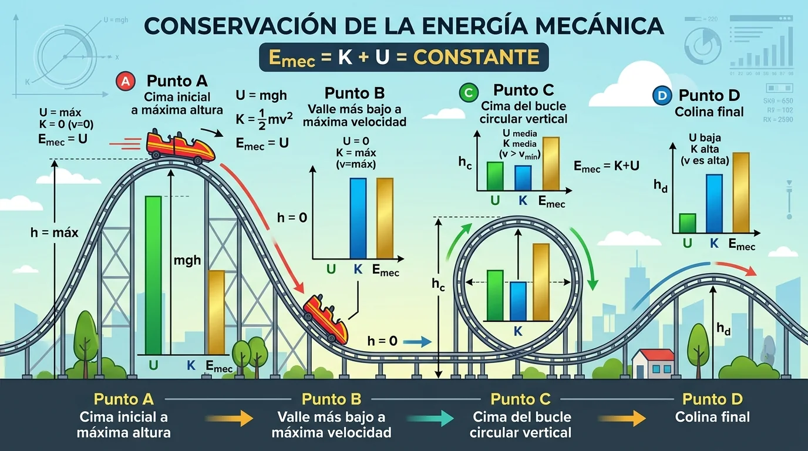
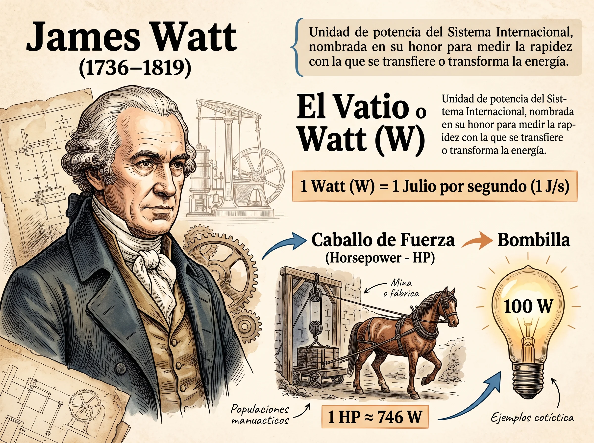
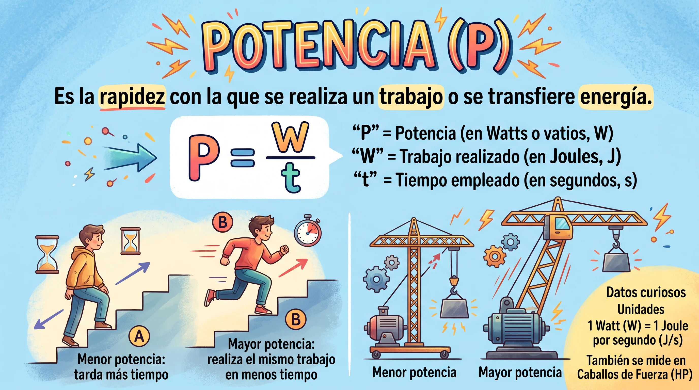

TRABAJO, POTENCIA, ENERGÍA Y CONSERVACIÓN DE LA ENERGÍA
Laboratorio Virtual Interactivo, Modelos Cuantitativos de Serway y Análisis de Transformaciones Energéticas

TU MISIÓN COMO INVESTIGADOR CIENTÍFICO
Durante este taller interactivo actuarás como un físico e ingeniero investigador. Manipularás fuerzas vectoriales a diferentes ángulos, medirás el trabajo mecánico en tiempo real, experimentarás con resortes reales bajo la Ley de Hooke, lanzarás carros en montañas rusas para verificar la inquebrantable Ley de Conservación de la Energía Mecánica y calcularás la potencia de motores industriales. ¡Descubre la pasión por la ciencia que mueve nuestro universo!
Datos de Identificación del Estudiante
Sección 1 de 8: Inicio y Misión
TEORÍA
TRABAJO MECÁNICO Y PRODUCTO ESCALAR
Capítulo 7 (Serway): Energía de un sistema y trabajo por una fuerza constante
LECCIÓN 01Fuerza y Desplazamiento
Definición Fundamental
¿Qué es Trabajo en Física?
En la vida cotidiana, "trabajo" es cualquier actividad que cansa. En física, el trabajo mecánico ($W$) realizado por una fuerza constante sobre un sistema se define rigurosamente como el producto escalar del vector fuerza $\vec{F}$ por el vector desplazamiento $\Delta\vec{r}$:
$$W = \vec{F} \cdot \Delta\vec{r} = F \, d \cos\theta$$
Donde $F$ es la magnitud de la fuerza en Newtons (N), $d$ es el desplazamiento en metros (m), y $\theta$ es el ángulo entre ambos vectores. La unidad en el SI es el Joule (J): $1\text{ J} = 1\text{ N}\cdot\text{m} = 1\text{ kg}\cdot\text{m}^2/\text{s}^2$.
Los Tres Casos Cardinales
El Signo del Trabajo
Trabajo Motor ($W > 0$): Si $0^\circ \le \theta < 90^\circ$, $\cos\theta > 0$. La fuerza transfiere energía al sistema y aumenta su rapidez.
Trabajo Nulo ($W = 0$): Si $\theta = 90^\circ$, $\cos 90^\circ = 0$. Una fuerza perpendicular al movimiento (como la Normal o la centrípeta) no realiza trabajo.
Trabajo Resistente ($W < 0$): Si $90^\circ < \theta \le 180^\circ$, $\cos\theta < 0$. La fuerza extrae energía del sistema (ejemplo típico: la fricción cinética con $\theta = 180^\circ$, $\cos 180^\circ = -1$).

Ampliar
Figura 2.1 — Modelo Serway de Trabajo: Descomposición del vector fuerza en sus componentes ortogonales. Solo la componente paralela al desplazamiento $F_x = F\cos\theta$ realiza trabajo mecánico; la componente vertical $F_y = F\sin\theta$ no produce desplazamiento horizontal.
Simulación 1: Laboratorio Táctil de Trabajo Mecánico y Vectores
¡Arrastra la punta del vector de fuerza en el canvas!
Cargando telemetría de trabajo...
Fuerza Aplicada (F):60 N
Ángulo (θ):30°
Desplazamiento (d):8 m
Coef. Fricción (μk):0.15
Sección 2 de 8: Trabajo Mecánico
TEOREMA
ENERGÍA CINÉTICA Y EL TEOREMA TRABAJO-ENERGÍA
Capítulo 7.5 (Serway): Relación entre trabajo neto y rapidez de una partícula
LECCIÓN 02Energía del Movimiento
Energía Cinética
Energía Cinética (K)
La energía cinética ($K$) es la energía que posee un cuerpo debido a su estado de movimiento. Para un objeto de masa $m$ que se desplaza con rapidez $v$:
$$K = \frac{1}{2} m v^2$$
Es una magnitud escalar estrictamente positiva ($K \ge 0$). Al duplicar la rapidez de un móvil, su energía cinética se cuadruplica.
Teorema Central
Teorema del Trabajo y la Energía
Al aplicar la 2da Ley de Newton ($\Sigma F_x = m a$) y la ecuación cinemática de Torricelli ($v_f^2 = v_i^2 + 2 a d$), se demuestra que el trabajo neto realizado por todas las fuerzas sobre el cuerpo equivale exactamente a la variación de su energía cinética:
$$W_{neto} = \Delta K = K_f - K_i = \frac{1}{2} m v_f^2 - \frac{1}{2} m v_i^2$$

Ampliar
Figura 3.1 — Teorema Trabajo-Energía en el Frenado: Cuando los frenos ejercen una fuerza de fricción constante contra el movimiento, el trabajo negativo de fricción $W_{friccion} = -f_k d$ reduce la energía cinética del carro a cero ($K_f = 0$), disipando toda esa energía en calor.
Simulación 2: Laboratorio de Desaceleración, Frenado y Teorema W = ΔK
Demostración de distancia de frenado cuadrática
Cargando telemetría de energía cinética...
Velocidad Inicial (v0):20 m/s
Coef. de Fricción (μk):0.50
Sección 3 de 8: Teorema Trabajo-Energía
RESORTES
FUERZA VARIABLE, LEY DE HOOKE Y ENERGÍA ELÁSTICA
Capítulo 7.4 y 7.6 (Serway): Área bajo la curva e integración de fuerzas elásticas
LECCIÓN 03Sistemas Deformables
Ley de Hooke (1678)
La Fuerza Restauradora
Robert Hooke formuló que la fuerza que ejerce un resorte ideal es directamente proporcional a su deformación $x$ respecto a su posición de equilibrio, pero en sentido opuesto:
$$F_s = -k x$$
Donde $k$ es la constante de rigidez del resorte en $\text{N/m}$. El signo negativo refleja que es una fuerza restauradora.
Área Bajo la Curva
Energía Potencial Elástica ($U_e$)
Como la fuerza varía linealmente, el trabajo realizado por un agente externo para deformar el resorte equivale al área del triángulo bajo la gráfica $F$ vs $x$:
$$U_e = W_{ext} = \int_0^x k x' dx' = \frac{1}{2} k x^2$$
Esta energía queda acumulada en los enlaces interatómicos del resorte comprimido o estirado, disponible para realizar trabajo.

Ampliar
Figura 4.1 — Robert Hooke (1635-1703): Científico experimental inglés que descubrió la relación lineal entre el esfuerzo y la deformación unitaria elástica.

Ampliar
Figura 4.2 — Ley de Hooke y Área de Energía Elástica: Comportamiento del resorte en equilibrio, elongación y compresión. El área triangular bajo la curva $F = kx$ representa la energía potencial elástica acumulada: $U_e = \frac{1}{2}kx^2$.
Simulación 3: Laboratorio Táctil del Resorte y Demostración Geométrica
¡Arrastra la masa hacia la izquierda o derecha en el canvas!
Cargando telemetría elástica...
Constante del Resorte (k):80 N/m
Deformación (x):0.60 m
Sección 4 de 8: Ley de Hooke
CONSERVACIÓN
SISTEMAS CONSERVATIVOS Y MONTAÑAS RUSAS
Capítulo 8 (Serway): Conservación de la energía mecánica y disipación por fricción
LECCIÓN 04Leyes de Conservación
Energía Gravitacional
Energía Potencial Gravitacional
Para un cuerpo de masa $m$ ubicado a una altura $h$ respecto a un nivel de referencia en las cercanías de la superficie terrestre:
$$U_g = m g h$$
El peso es una fuerza conservativa: el trabajo gravitacional no depende de la trayectoria recorrida, únicamente de la diferencia de altura inicial y final ($W_g = -\Delta U_g$).
Ley Inquebrantable
Conservación de la Energía Mecánica
En un sistema aislado donde solo actúan fuerzas conservativas, la energía mecánica total ($E_{mec} = K + U$) se conserva constante:
$$K_i + U_i = K_f + U_f = \text{Constante}$$
Si existe fricción (fuerza no conservativa), la energía mecánica disminuye y se transforma en energía interna térmica: $\Delta E_{mec} = -f_k d$.

Ampliar
Figura 5.1 — Energía Potencial Gravitacional ($U_g = mgh$): Variación de la energía según la altura $h$. En la cima $U_g$ es máxima; durante la caída libre se transforma en energía cinética $K$; en el nivel de referencia $y = 0$, $U_g = 0$.

Ampliar
Figura 5.2 — Montaña Rusa y Conservación Mecánica: En los puntos A, B, C y D, las energías cinética (azul) y potencial (verde) se transforman mutuamente, mientras la energía mecánica total (dorada, $E_{mec} = K + U$) se mantiene rigurosamente constante.
Simulación 4: Montaña Rusa y Barras de Energía en Tiempo Real
Cinética (K):
0 J
Potencial (U):
0 J
Térmica (Eth):
0 J
TOTAL (Emec):
0 J
Sección 5 de 8: Conservación de la Energía
POTENCIA
POTENCIA MECÁNICA Y JAMES WATT
Capítulo 8.5 (Serway): Rapidez de transferencia energética y rendimiento en máquinas
LECCIÓN 05Física e Ingeniería
Rapidez de Trabajo
Concepto de Potencia
Dos motores pueden realizar exactamente el mismo trabajo (ej: levantar $500\text{ kg}$ a $10\text{ m}$), pero el más potente lo hace en menor tiempo. La potencia media ($\bar{P}$) es la tasa temporal con la que se transfiere energía o se realiza trabajo:
$$\bar{P} = \frac{W}{\Delta t} = \vec{F} \cdot \vec{v} = F \, v \cos\theta$$
La unidad en el SI es el Vatio o Watt (W): $1\text{ W} = 1\text{ J/s}$. En la industria se usa el Caballo de Fuerza (HP): $1\text{ HP} \approx 746\text{ W}$.
Contexto Tecnológico
Kilovatio-Hora (kWh)
En la factura de energía eléctrica de nuestras casas no nos cobran potencia, nos cobran energía consumida medida en Kilovatios-hora:
Es la energía transferida en 1 hora por un artefacto que consume una potencia constante de 1000 Watts (1 kW).

Ampliar
Figura 6.1 — James Watt (1736-1819): Ingeniero escocés que perfeccionó la máquina de vapor, impulsó la Revolución Industrial y acuñó el término "Caballo de Fuerza" (HP).

Ampliar
Figura 6.2 — Grúa Industrial: Un motor elevando una carga a velocidad constante $v$ desarrolla una potencia instantánea $P = F \cdot v = m g v$.
Simulación 5: Laboratorio de Grúa y Potencia de Elevación
Cálculo en Watts y Caballos de Fuerza (HP)
Cargando telemetría de potencia...
Masa a Elevar (m):400 kg
Altura Objetivo (h):15 m
Tiempo de Elevación (t):8 s
Sección 6 de 8: Potencia Mecánica
TALLER
TALLER INTERACTIVO EVALUATIVO PAFEM
Colegios: Diego Maya Salazar, Jaime Salazar Robledo y Hugo Ángel Mejía
EVALUACIÓNCálculo & Argumentación
Resolución y Verificación del Taller
Resuelve cada ejercicio, valida tus cálculos interactivos y despliega el procedimiento paso a paso para transcribirlo.
Sección 7 de 8: Taller Evaluativo
RÚBRICA
RÚBRICA DE EVALUACIÓN DEL MEN Y ENTREGA FINAL
Criterios de valoración del aprendizaje, metacognición y reporte oficial en PDF
CIERREEntrega Oficial
Rúbrica Oficial de Desempeño y Competencias DBA (MEN)
La valoración definitiva integra la verificación interactiva y la transcripción manual con sustentación analítica en tu cuaderno de física:
Competencia / Criterio
Superior (4.6 - 5.0)
Alto (4.0 - 4.5)
Básico / Bajo (< 4.0)
1. Trabajo y Producto Escalar
Aplica $W = F d \cos\theta$ con despejes algebraicos impecables, reconociendo el significado físico de $\theta = 90^\circ$.
Calcula el trabajo mecánico con mínimos errores de signos o unidades.
Confunde trabajo motor con resistente u omite el coseno del ángulo.
2. Teorema Trabajo-Energía
Demuestra la relación cuantitativa $W_{neto} = \Delta K$ y explica por qué la distancia de frenado crece cuadráticamente.
Aplica la fórmula de energía cinética pero titubea al vincular la fricción.
Presenta dificultades en el despeje algebraico de la velocidad o distancia.
3. Resortes y Ley de Hooke
Calcula $F_s = -kx$ y $U_e = \frac{1}{2}kx^2$ interpretando geométricamente el área del gráfico $F$ vs $x$.
Calcula la energía elástica pero confunde la fuerza restauradora con la aplicada.
Olvida elevar al cuadrado la deformación $x$ en la fórmula de energía elástica.
4. Conservación y Potencia
Resuelve sistemas conservativos y disipativos ($K_i + U_i = K_f + U_f + E_{th}$) y calcula potencia en Watts y HP.
Aplica la conservación pero presenta dudas al contabilizar pérdidas por fricción.
Confunde trabajo (Joules) con potencia (Watts) o energía con fuerza.
5. Presentación y Cuaderno
Transcripción manual pulcra, esquemas vectoriales trazados con regla y justificación paso a paso.
Transcripción manual ordenada con gráficos legibles.
Entrega incompleta, sin esquemas o sin procedimientos analíticos detallados.
REFLEXIÓN METACOGNITIVA: ¿QUÉ APRENDISTE HOY?
1. ¿Por qué una fuerza puede estar empujando fuertemente un objeto sin realizar ningún trabajo mecánico sobre él?
2. Si duplicas la velocidad a la que conduces tu bicicleta, ¿por qué requieres 4 veces más distancia para frenar por completo?
3. ¿Cómo se transforma la energía potencial del agua en las montañas de Risaralda hasta encender el foco de tu habitación?
* Escribe tus respuestas y reflexiones de puño y letra en tu cuaderno de física.
Cargando datos del estudiante...
Finalización, Calificación y Entrega del Taller
Genera tu reporte oficial de resultados evaluativos, cópialo para enviarlo al profesor por WhatsApp o correo, y descarga tu documento oficial en formato PDF en tamaño Carta para tu portafolio académico.